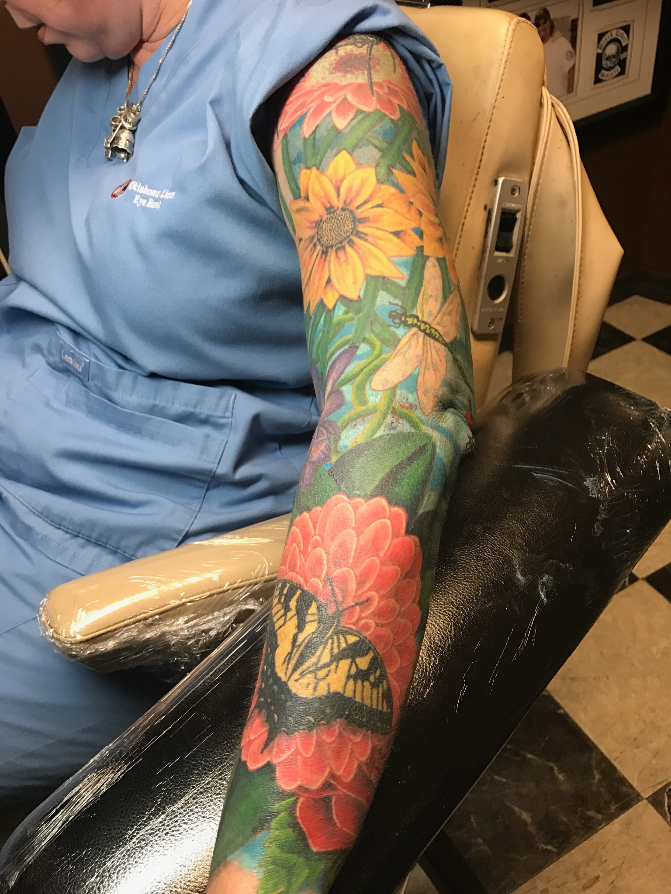
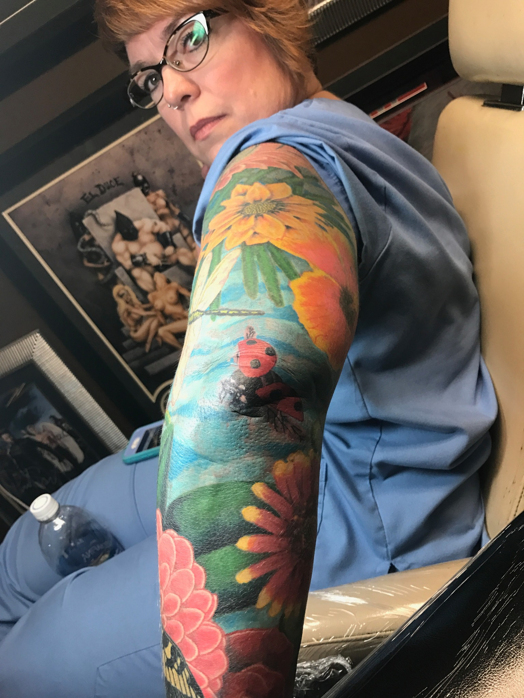

Master Composition
The full silhouette, focal point, and movement are established before small details are allowed to compete for space.
Sleeves and Backpieces • Oklahoma City
Josh plans sleeves and backpieces as complete compositions, then organizes the work into practical stages based on placement, detail, color, healing, and scheduling.

Josh’s planning approach
A large project can contain many subjects, but it still needs a primary focal point, a clear direction, supporting elements, and intentional transitions. Josh first considers how the complete sleeve or backpiece should read before deciding where individual details belong.
If the client already has tattoos in the area, those pieces become part of the planning problem. The consultation determines whether they can be connected, framed, reworked, or should remain visually separate.
Design priorities
These decisions determine whether the idea works as a tattoo on the selected body area.
The full silhouette, focal point, and movement are established before small details are allowed to compete for space.
Shoulders, elbows, spine, ribs, and joints affect where faces, eyes, hard edges, and major transitions should sit.
Large projects are divided into workable sections so completed areas can heal and the overall design remains organized.
Background, repeated shapes, value, and color relationships make separate sessions feel like one finished tattoo.
Placement and execution
Bring the major subjects you want included, the overall mood, and examples of work you like. It is usually more useful to identify two or three must-have elements than to arrive with a list of twenty equally important objects.
Exact session counts are not promised from a webpage. Skin, detail, color, placement, pain tolerance, appointment length, and healing all affect the schedule. Josh can provide a more useful range after seeing the area and discussing the design.

Portfolio connections
Project pages discuss only the facts visible or published. Private client stories, exact session counts, and healed status are not invented.

Military sleeve detail showing aviation, service, and geometric elements.
View image →Full-arm military-inspired color sleeve by Josh Poindexter.
View image →
Colorful military-inspired sleeve composition by Josh Poindexter.
View image →
Military sleeve lettering and insignia detail by Josh Poindexter.
View image →
Two-angle view of a completed military-inspired sleeve by Josh Poindexter.
View image →Floral sleeve project
This floral sleeve brings together large flowers, insects, leaves, and varied color across the arm. The images show the project from several angles without treating repeated views as separate tattoos.

Full-arm floral composition with saturated color and layered botanical elements.
View image →
Bright floral forms and a butterfly arranged through the lower arm.
View image →
A closer view of the sleeve’s layered color and smaller natural elements.
View image →Prepare for consultation
Questions clients ask
There is no responsible universal number. Size, detail, color, skin, session length, and healing all matter. Josh discusses staging after evaluating the project.
Yes, but a planned full composition usually creates stronger flow and fewer awkward gaps. Existing separate tattoos can still be evaluated for connection.
No. Bring the core subjects, mood, and references. Josh can help reduce or organize the idea into a workable visual hierarchy.
Sometimes, but the combination needs a shared visual language. Line weight, value, color, and background treatment help different subjects feel related.
Start the project
Share the subject, body location, approximate size, references, and any existing work in the area.